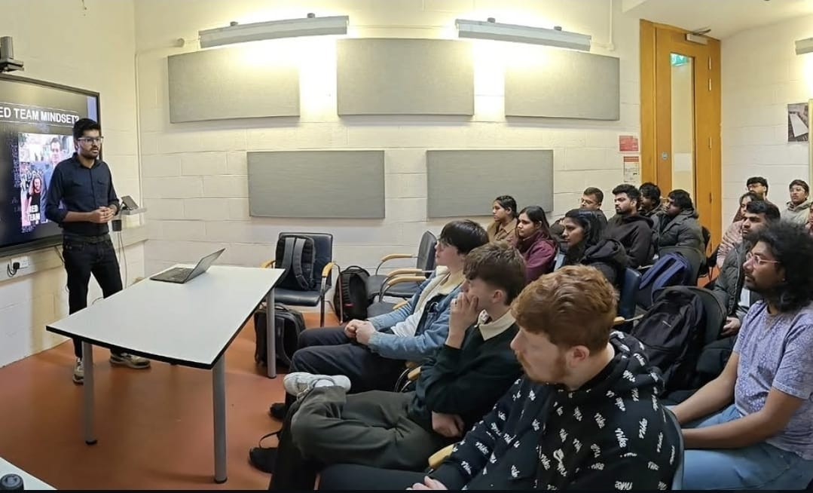
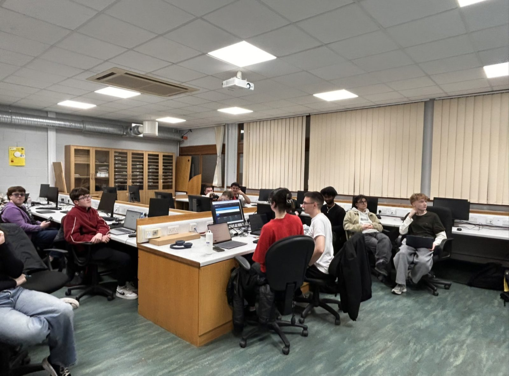
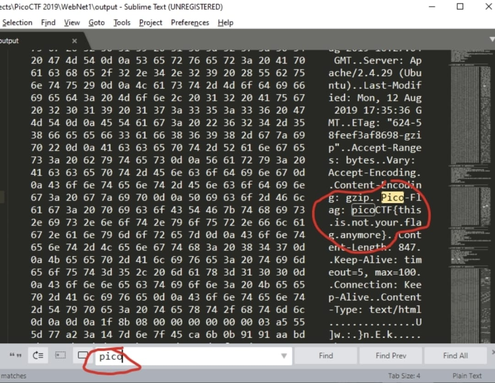
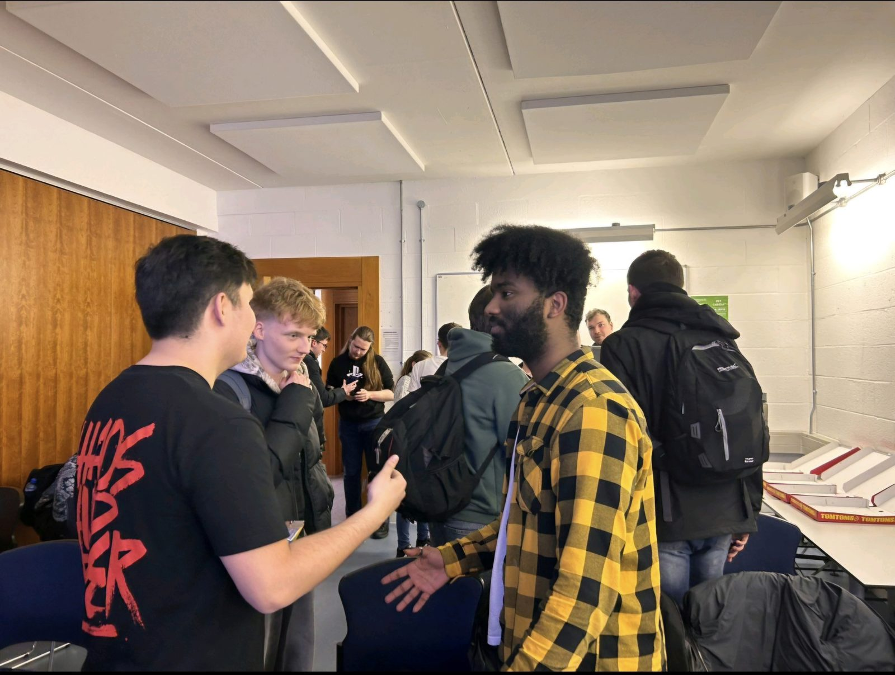

About
Who we are, and the story behind bringing the MTU Cybersecurity Society back to life.
What We Offer
-

Expert Talks & Workshops – Learn from top professionals and researchers in cybersecurity. -

Hands-On Hacking & Exploit Labs – Dive into real-world vulnerabilities, penetration testing, and ethical hacking. -

Capture The Flag (CTF) Challenges – Test your skills in security competitions and intervarsities. -

Community & Networking – Join our active Discord community, collaborate on projects, and share knowledge.
From breaking into (and securing!) networks to mastering the art of cryptography, we’ve got everything to keep you ahead in the cybersecurity game. Join us and become part of the next generation of cyber defenders!
How It Came About
When we started at MTU, the Cybersecurity Society technically already existed — but only on paper. Its previous board had finished their masters and moved on without leaving a legacy behind them: no handover, no committee, no plan for who came next. The society had been dormant for close to a year.
Cybersecurity is our degree and our genuine interest, and it seemed like a waste that a university with MTU's cyber credentials didn't have a student community to match. So alongside a group of our peers, we set out to bring it back.
Rebuilding it meant starting from the ground up:
- Learning from the people who came before. We tracked down and met with former members to understand what the society had been, what had worked, and what had caused it to stall — so we wouldn't repeat the same mistake of building something that couldn't outlive us.
- Getting the university behind us. We liaised with MTU faculty and the Head of the Computer Science Department to re-establish the society properly and make sure it had institutional support.
- Putting a real committee in place. We held an AGM, elected a full board, and gave every role a clear owner.
- Starting to run events again. CTFs, industry talks, hackathons, and a space for people to actually turn up to.
We were elected to the committee, and within a few months the society went from inactive to sending students onto panels at a global telecoms conference.
MTU is one of Ireland's leading cybersecurity hubs — home to Cork's Nimbus Research Centre, its national Cyber Range and prototyping labs, dedicated cyber degrees, and the €7M Cyber Innovate programme. The society exists to bring that world within reach of students: hands-on skills, CTFs, and real connections to Ireland's cyber industry.
At its heart, though, it's about people. It's a space where students connect, collaborate, and grow together, with no experience required — from complete beginners to seasoned hackers. A community built on curiosity, teamwork, and a shared drive to learn.